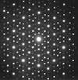
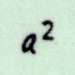

A guide for Weyl’s magnificent book.
Notes to save you time.
A semi–popular expository article on singular algebraic surfaces.
Pólya’s 1924 article on the classification of wallpaper groups.
| Writing | |
|  | Errata for ’s Symmetry A guide for Weyl’s magnificent book. |
|  |
Errata for & ’s Algebra Notes to save you time. |
| Translation | |
|
World record surfaces: algebraic surfaces with many singularities
– A semi–popular expository article on singular algebraic surfaces. | |
|
On the analog of crystallographic symmetry in the plane
– Pólya’s 1924 article on the classification of wallpaper groups. |
“To go over my old papers and to recollect the hopes and ideas connected with them turned out to be much more interesting and edifying to me than I could have imagined. I was especially struck by the following observation: how often the published paper was only a small part of far more ambitious plans! Some papers now appear to me as remainders of a shipwreck, although the reader probably will not notice it.”